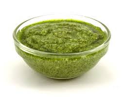

Basil Pesto

Description
Basil pesto is one of my favorite pasta sauces. It is pretty
simple to make and doesn't require many ingredients. It can be made
in a food processor or a mortar and pestle. Using a mortar and pestle
will give better results but is more labor intensive so I almost always
just use a food processor.
Ingredients
- 2 cloves of garlic
- 2 tablespoons of pine nuts
- 3 ounces of fresh basil leaves
- Kosher salt
- around 4 tablespoons of freshly grated parmesean
- 3/4 cup extra-virgin olive oil
Steps
- Add all ingredients to food processor
- Pulse until the sauce reaches the desired consistency
- Taste and add more salt as needed